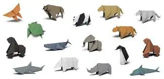

Origami Instructions and Diagrams
Step by step diagrams are probably the most popular and easiest to follow way to
show how to fold things out of paper.
Trying to find good origami instructions on the internet on the Internet can be lot of work though.
To help your search we've put together the largest database of free origami diagrams
anywhere on the Internet.

Interesting Facts about chameleon
- Their feet work like salad tongs
- Almost half of all known species live in
Madagascar - Chameleons vary widly in terms of size

Interesting Facts about pigeon
- They might be the first domesticated birds
- They understand space and time
- They can find their way back to their nest
from 1300 miles away

Interesting Facts about camel
- Mother camels carry their calves up to 14 months
before giving birth - There are over 160 words for camel in Arabic alone
- Some calves are born completely white and turn brown
astheir adult coat comes in

Interesting Facts about teddy bear
- The official term for a teddy bear collector is
an ‘arctophile’ - The first person to make a teddy bear was
Richard Steiff - Teddy bear was invented on november 14 1902

Interesting Facts about panda
- Like domestic cats, giant pandas have vertical slits
for pupils - They have an extended wrist bone that they use like a
thumb to help them grip food - Giant pandas spend 10-16 hours a day feeding, mainly on
bamboo

Interesting Facts about flying cicada
- Cicadas are like tiny violins
- Cicadas make noise like toy frogs
- They’re underground builders